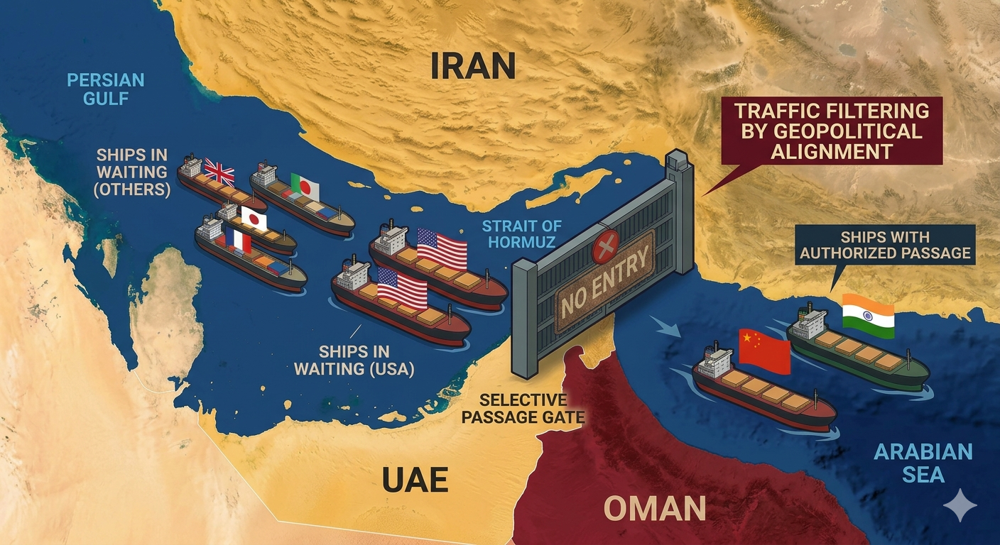

Iran Filters Hormuz Traffic: Green Light for China and India as Markets Brace for Impact

Figure 1: Real-time satellite tracking of maritime congestion and selective routing corridors in the Strait of Hormuz.
Strategic Intelligence Summary
- Asymmetric Trade: Iran's selective blockade establishes an unprecedented precedent, weaponizing maritime chokepoints based on bilateral alignments.
- Diplomatic Truce: A sudden 5-day pause in Washington's military response prevents an immediate kinetic escalation, shifting the theater to backchannel negotiations.
- Supply Chain Realignment: Western logistics conglomerates face soaring insurance premiums, while Eastern vessels operate under exclusive safe-passage guarantees.
The rules of global maritime trade have been rewritten overnight. By enforcing a selective filtration system in the Strait of Hormuz, Tehran has introduced an unprecedented variable into macroeconomics: chokepoint weaponization by alignment. By granting safe passage exclusively to vessels bound for China and India, the geopolitical friction transits from a conventional military standoff into a deep re-engineering of global trade corridors and energy supply chains.
The Failure of Universal Access
For decades, freedom of navigation in international straits was treated as an absolute baseline for global commerce. The current blockade shatters this assumption. As Western energy giants face indefinite delays and prohibitive insurance premiums, Asian counters are leveraging their diplomatic neutrality to secure steady energy inflows. This asymmetric flow of commodities is causing an institutional shift in capital deployment, as funds flow toward jurisdictions capable of guaranteeing operational continuity despite geopolitical stress.
The 5-Day Washington Truce
The decision by Washington to freeze its military ultimatum introduces a fragile 120-hour window for diplomatic engineering. This tactical pause has temporarily capped the immediate geopolitical premium on raw materials, preventing a systemic liquidity crunch in energy derivatives. However, financial analysts warn that this stabilization is artificial. Institutional investors are utilizing this truce not to bet on peace, but to restructure their hedging positions against a worst-case escalation scenario.
Implications for Western Capital
The long-term risk for Western financial structures lies in the structural shift of trade routes. If the selective filtration of shipping lanes becomes a permanent mechanism, the pricing power of benchmark crudes could migrate toward non-Western exchanges. At Global Capital Insights, we emphasize that risk management teams must look beyond immediate price volatility; the true metric to track is the accelerating decoupling of international logistics networks and the legal frameworks that safeguard them.
As the 5-day diplomatic window ticks away, the global economy remains in a state of suspended animation. The true outcome of this crisis will not be measured by military deployment, but by the performance of diversified capital frameworks under maximum structural stress.